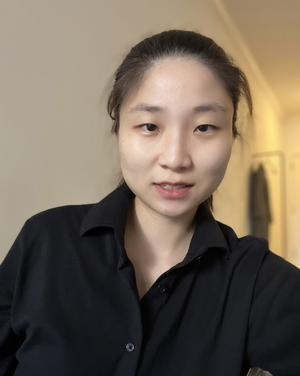
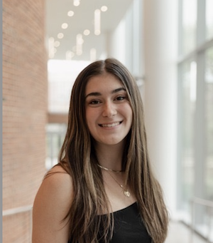

| Name | Office Number |
|---|---|
| Nelson Padua-Perez | IRB 2210 |
| Email: nelson@umd.edu | |
Mondays and Wednesday from 11:30 pm - 1:00 pm. Please do not use the Quuly office hours queue if you plan to stop by Nelson's Office (IRB 2210).
TAs will hold office hours in the location specified at
CMSC335 office hours location.
The office hour schedule can be found below. To find the TA office hours room, take the elevator to the fourth floor once you are in the AVW building. After you get out of the elevator, make a left and start walking down the hall. The TA office hours room will be to your left (AVW 4166). Feel free to open the door and enter.
All office hours will move online beginning at 4PM. For these hours you will use the same Queue you would use for regular hours. Make sure you provide your Zoom URL when adding yourself to the Quuly queue.
You can get assistance from any of the TAs posted on the schedule below.
We will use Quuly for students to see a TA during office hours. IMPORTANT: If you have used Quuly in the past, keep in mind the Quuly server has been moved to a new location; use the above link.
Information how to register can be found at Quuly Sign up. To request help during office hours, follow the instructions provided at Requesting Help.
Important: In order for you to access the Quuly queue, you need to have an email address in Quuly. You can add/update your email address by using the Quuly “My Account” view.
We want to make sure a TA can help you immediately after you are selected from the Quuly queue. Make sure you have Quuly notifications enabled. There is a separate desktop notification that is issued if one gives Quuly permission to send notifications to your desktop. To enable those in Chrome, one can click the lock icon and make sure notifications are set to "Allow".
Please only join the Quuly queue during office hours or 5 minutes (no more than 5 minutes) before an office hour period starts, otherwise you will be removed from the queue without receiving assistance.
TAs will spend around 10 minutes per student if other students are waiting. If there is no other student waiting you can spend as much time as needed. There is a limit of four daily visits per student.
| ID | Name | Time | Photo | |
|---|---|---|---|---|
| 001 | Yang Bai Grader
|
11:00-12:00 M 11:00-01:00 F 04:00-05:00 MW |
yangbai8@umd.edu | |
| 002 | Kyungyeon Lee Grader
|
03:00-05:00 TW 11:00-12:00 F |
kylee@umd.edu |  |
| 003 | Yixuan Ren Grader
|
04:00-05:00 MW | yxren@umd.edu | |
| 004 | Harpreet Multani Grader
|
11:00-01:00 M 12:00-02:00 W 12:00-01:00 F |
hmultani@umd.edu | |
| 005 | Sofia Chalkias Grader
|
04:00-05:00 M | schalkia@umd.edu | |
| 006 | Caroline Kumpa Grader
|
11:00-01:00 M 04:00-05:00 T 12:00-02:00 W |
ckumpa@terpmail.umd.edu |  |
| 007 | Olivia Miskala-Dinc Grader
|
11:00-02:00 T 11:00-01:00 Th |
oliviamd@umd.edu | |
| 008 | Faris Attallah Grader
|
01:00-04:00 M 02:00-04:00 W |
Faris@terpmail.umd.edu | |
| 009 | Josh Horner Grader
|
02:00-04:00 M 04:00-05:00 TW 10:00-11:00 W |
jwh447@terpmail.umd.edu | |
| 010 | Jiasheng Li |
10:00-12:00 Th | jsli@umd.edu | |
| Total Teaching Assistants Available: 10 | ||||
Here are some useful links for the class: